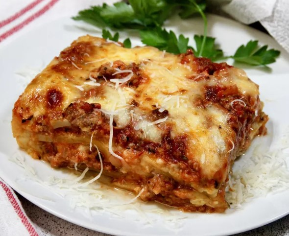

Lasagna Recipe

Description
Everyone loves a good lasagna, right? It's a great way to feed a crowd and a perfect
dish to bring to a potluck. It freezes well. It reheats well.
Leftovers will keep you happy for days.
Ingredients
- Olive oil, for coating baking dish
- 9 to 12 lasagna noodles
- 1 cup ricotta cheese
- 1 egg
- 1/4 cup grated Parmigiano-Reggiano
- Zest of 1 fresh lemon
- 1/2 teaspoon kosher or sea salt, or to taste
- Fresh cracked black pepper, to taste
- 24 ounces tomato sauce
- 2 cups cooked chicken
- 16 ounces (1 pound) grated mozzarella cheese
Steps
- Preheat oven to 375°. Lightly coat a 2-quart baking dish with olive oil and set aside.
- Cook lasagna noodles until al dente according to package instructions. Rinse under cold water until cool.
Lay the cooked pasta flat and set aside.
- In a medium bowl, combine the ricotta cheese, egg, Parmigiano-Reggiano, lemon zest, salt and pepper. Set
aside.
- Layer one-third of the remaining tomato sauce over the lasagna noodles and then layer half of the ricotta
mixture. Layer half of the chicken over the ricotta and then spread one-third of the mozzarella cheese.
Repeat this pattern: noodles, sauce, ricotta cheese, chicken and mozzarella cheese. Add a final layer of
lasagna noodles, then add remaining tomato sauce and remaining mozzarella cheese.
- Bake lasagna for about 45 minutes or until the top cheese is melted and golden.
- Remove from oven; allow to cool for about 10 to 15 minutes before serving.